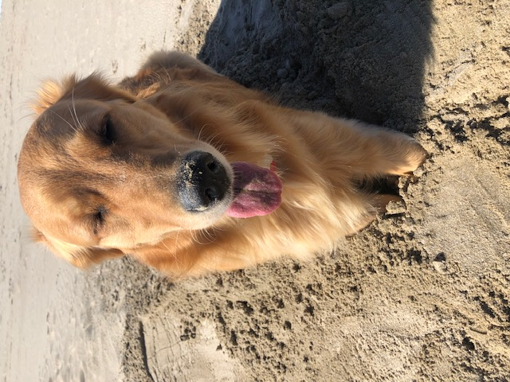

Welcome to Lucy's Blog!
Hi there! My name is Lucy and I'm a 2 year old Golden Retriever. This page is for everyone to see what I'm up to since we all have to physically distance ourselves for a bit. In addition to all of the photos that my mom takes of me, I'll tell you a bit about myself.
My hobbies include, but are not limited to:
- Swimming at Cannon Beach
- Sunbathing at the park
- Barking at squirrels
- Cuddling with my people
My least favorite things are:
- When my humans are on their phones or computers (really any time they ignore me)
- Sirens
- Getting groomed
- Rainy days
A day in my life
- Wake my people up bright and early
- Go outside
- Eat breakfast
- Cuddle until it's time to go on a walk
- Get my zoomies out at the park
- Nap, nap, and then more napping
- Dinner
- Play until bedtime
